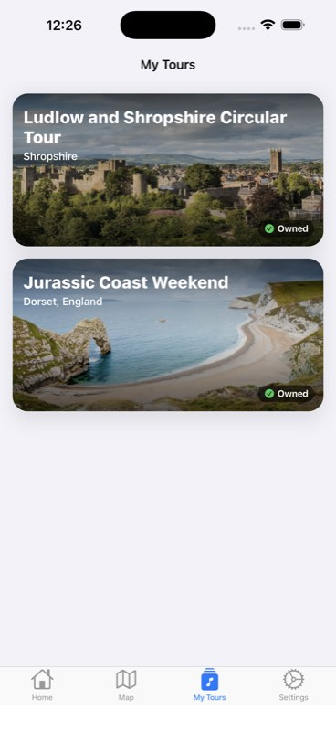
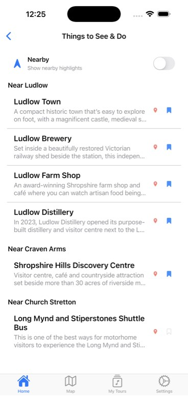
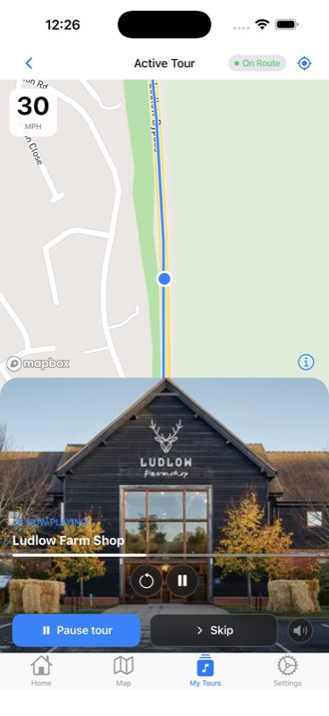

Stories along the way
Hear stories connected to the places around you as you follow your chosen tour.
Thoughtful technology for people who love the open road. Discover the places, stories and moments that make a journey memorable.
Discover the experienceTake the scenic route, discover remarkable places and enjoy the freedom to explore at your own pace.
Hear stories connected to the places around you as you follow your chosen tour.
Download your tour before you set off, including its content and maps for use where signal is patchy.
Find interesting stops and build a journey around the places you want to experience.
Explore your tours, find places to see and enjoy location-aware stories as you travel. These screenshots show the Open Road touring experience.



From Ludlow’s historic streets to the Shropshire Hills, discover local stories and memorable places along the way.
Ask us about the tourFrom a night under the stars to a welcoming hotel, explore places to pause and make more of your journey.
Find places to settle in, put the kettle on and enjoy the scenery around you.
Discover welcoming places to stay, from country escapes to coastal bases.
Open Road Technologies is an independent UK software company creating thoughtful experiences for people who explore. We believe the best journeys leave room for a story, a detour and a place worth remembering.
Have a question or want to know more? We’d love to hear from you.
Get in touch →